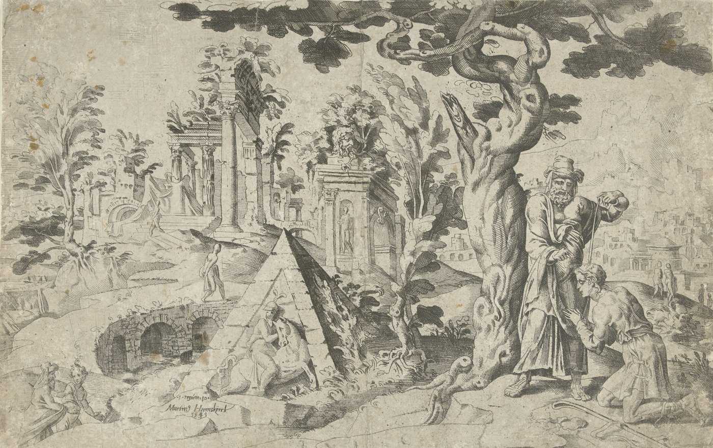

1 Samuel 10 — The Mister Translation

The plate is inscribed “1 regum 10”, the old Latin Bible’s name for this chapter, and signed with Heemskerck’s name and the year 1549. Samuel pours the flask of oil of verse 1 on Saul’s head under a great tree; the pyramid behind them may be meant for Rachel’s tomb, the first sign of verse 2.

Translator's Notes — verse by verse
The flask and the kiss. “Samuel took the flask of oil and poured it on his head, and kissed him”: “the flask of oil” stands in three verses of the Hebrew Bible, here and twice at the anointing of Jehu (2 Kings 9:1, 3). The title is the one Jehovah gave the day before, nagid, “leader” (1 Samuel 9:16, now on these pages), now “over his inheritance”. The Greek is longer, adding that Saul will rule the Lord’s people and save them from their enemies round about, “and this shall be the sign to you”. The Douay has the longer text too, “and thou shalt deliver his people out of the hands of their enemies”; the ASV has “Is it not that Jehovah hath anointed thee to be prince over his inheritance?”; the NWT 1984 “Is it not because Jehovah has anointed you as a leader over his inheritance?”. Josephus calls it “the holy oil” and has Samuel say, “Know that you are king, chosen by God” (Antiquities 6.54, numbered 6.4.2 in Whiston).
Rachel’s tomb. The first sign is “two men by Rachel’s tomb, in the territory of Benjamin, at Zelzah”. Genesis buries Rachel “on the way to Ephrath — that is, Bethlehem” (Genesis 35:19, now on these pages), south of Jerusalem, while this verse puts her tomb on Benjamin’s border to the north; the two are not reconciled (Ramah). Zelzah is named nowhere else, and the Greek reads the word as a verb, two men “leaping greatly”. The father has “given up the matter of the she-donkeys and is anxious about you”, as Saul feared in 9:5. The ASV has “by Rachel’s sepulchre, in the border of Benjamin at Zelzah”; the NWT 1984 “close by the tomb of Rachel in the territory of Benjamin”. Josephus puts the three men first and Rachel’s tomb second (Antiquities 6.55–56).
The oak of Tabor. At “the oak of Tabor” (an oak or great tree, not the mountain of that name in the north) three men “going up to God at Bethel”, with goats, bread and wine for the sanctuary, give Saul two of their loaves. A skin of wine is nevel yayin; two verses later nevel is a harp. The ASV has “thou shalt come to the oak of Tabor”; the KJV “thou shalt come to the plain of Tabor”; the NIV “the great tree of Tabor”.
Gibeah of God. The third sign is at “Gibeah of God, where the Philistines’ garrisons are”, the garrisons that seemed ruled out by “they did not come again into the territory of Israel” (1 Samuel 7:13, now on these pages); the Greek takes the word as a man’s name, “Nasib the Philistine”. There Saul will meet “a band of prophets”, a chevel, a cord or a company, coming down from the high place with harp, tambourine, flute and lyre, “prophesying”, the ecstatic speech of the seventy elders who “prophesied — and did not continue” (Numbers 11:25, now on these pages). “The spirit of Jehovah will rush on you”: tsalach, the verb of the spirit on Samson (Judges 14:6; 15:14, both now on these pages). Then “do for yourself what your hand finds”, Zebul’s words to Abimelech for seizing a chance (Judges 9:33, now on these pages), and “seven days you shall wait” at Gilgal, an instruction the book will return to (1 Samuel 13:8, now on these pages). The ASV has “a band of prophets coming down from the high place with a psaltery, and a timbrel, and a pipe, and a harp”; the NWT 1984 “while they are speaking as prophets”.
Another heart. “As he turned his shoulder to go”: shikhmo, the shoulder from which he stood taller than everyone (9:2). “God turned his heart into another heart”: hafakh, the verb of verse 6, “be turned into another man”; “another heart” stands in one verse of the Hebrew Bible. The ASV has “God gave him another heart”; the NWT 1984 “God began changing the heart of his into another”.
“Is Saul also among the prophets?” At Gibeah “the spirit of God rushed on him, and he prophesied among them”, and those who knew him ask, “What is this that has happened to the son of Kish? Is Saul also among the prophets?” The question stands in three verses of the Hebrew Bible, each spelling “prophets” differently: verses 11 and 12 here, and a second story of Saul among the prophets at Ramah (1 Samuel 19:24). It “became a proverb”, a mashal. The NIV has “Is Saul also among the prophets?”; the TLB “Is Saul a prophet too?”
“And who is their father?” A man of the place answers with a question of his own. It can be heard as a shrug, that the prophets have no famous father either, or as saying that a prophet’s “father” is his master and not his family; the text does not explain it. The Greek reads “his father”. The ASV has “And who is their father?”; the TLB “With a father like his?”
The uncle. Saul’s uncle, dod, asks where they went; Saul tells him about the she-donkeys, “but the matter of the kingship, of which Samuel had spoken, he did not tell him”. Josephus names the relative Abner (Antiquities 6.58, numbered 6.4.3 in Whiston); the book later calls Abner the son of Ner, Saul’s uncle (1 Samuel 14:50). Josephus says Saul kept quiet because he expected envy and disbelief (6.59). The ASV has “But concerning the matter of the kingdom, whereof Samuel spake, he told him not”; the NWT 1984 “And the matter of the kingship about which Samuel had talked, he did not tell him”.
“You have rejected your God.” Samuel “called the people together”, vayyats‘eq, the causative of the verb behind the people’s “outcry” in 9:16. His speech repeats Jehovah’s word of 8:7: “you today have rejected your God”, ma’as. “And you have said to him, A king you shall set over us”: the Hebrew reads lo, “to him”; spelled with another letter the same sound is “No”, and the Greek reads “No”, as the people said in 8:19. The ASV has both, “and ye have said unto him, Nay, but set a king over us”; the NWT 1984 “No, but a king is what you should put over us”. They present themselves “by your thousands”, elef, the word for a clan.
“Taken.” “The tribe of Benjamin was taken … the clan of the Matrites was taken; and Saul son of Kish was taken”: lakad, the verb and the procedure of Achan’s trial, “the tribe that Jehovah takes shall come forward by clans” (Joshua 7:14, now on these pages). No lot is named, but the procedure that once found a thief now finds a king, and the Hebrew goes straight from the clan to Saul; the Greek adds the step between, that they brought the clan of Matri near man by man. The ASV has “and the tribe of Benjamin was taken”; the NWT 1984 “and the tribe of Benjamin came to be picked”.
Among the baggage. “They asked again of Jehovah”, sha’al, the verb of Saul’s name, and the answer is “Look — he has hidden himself among the baggage”, the kelim, gear and vessels. Josephus says he hid so as not to seem to take the rule willingly (Antiquities 6.63, numbered 6.4.5 in Whiston). The ASV has “Behold, he hath hid himself among the baggage”; the KJV “he hath hid himself among the stuff”.
“Long live the king!” Brought out, he is “taller than all the people from his shoulders upward”, as in 9:2. “Do you see him whom Jehovah has chosen”: in 8:18 the king was the one “you have chosen for yourselves”. The people shout yechi ha-melekh, “Long live the king!”, and the cry stands in seven verses of the Hebrew Bible, from this one to Solomon’s anointing, “Long live King Solomon!” (1 Kings 1:39, now on these pages). The NWT 1984 has “Let the king live!”; the KJV “God save the king”.
The due of the kingship. “Samuel spoke to the people the due of the kingship, and wrote it in a book, and laid it up before Jehovah”: mishpat ha-melukhah, and the phrase stands in one verse of the Hebrew Bible. In chapter 8 “the due of the king” was a list of what a king would take (8:11; mishpat); now the rules of the office are written down, as the king law told the king to “write out for himself a copy of this instruction in a scroll” (Deuteronomy 17:18, now on these pages). Josephus says the book was laid up “in the tabernacle of God” as a witness to later generations (Antiquities 6.66, numbered 6.4.6 in Whiston). The ASV has “the manner of the kingdom”; the NWT 1984 “the rightful due of the kingship”; the Douay “the law of the kingdom”.
Valiant men. Saul goes home to Gibeah, the town of the outrage in Judges (Judges 19:22, now on these pages), and “the valiant men”, ha-chayil, go with him, men “whose hearts God had touched”. The NIV has “valiant men whose hearts God had touched”; the ASV “there went with him the host, whose hearts God had touched”.
Sons of worthlessness. Others are “sons of worthlessness”, the phrase used of Eli’s sons (1 Samuel 2:12, now on these pages) and of the men of Gibeah. “How will this one save us?” turns Jehovah’s promise “he will save my people” (9:16) into a sneer. They “despised him”, bazah, and brought no gift, minchah. The ASV has “But certain worthless fellows said, How shall this man save us?”; the NWT 1984 “As for the good-for-nothing men”.
“Like one keeping silent.” The chapter ends “But he was like one keeping silent”, ke-macharish, from charash, to be silent; the word stands in one verse of the Hebrew Bible. The Greek reads nearly the same letters as “after about a month” and opens the next chapter with them, and Josephus also puts the Ammonite war “a month later” (Antiquities 6.68, numbered 6.5.1 in Whiston). A Hebrew manuscript from Qumran, 4QSama, is reported to carry a further paragraph here, about Nahash the Ammonite putting out the right eyes of the Israelites beyond the Jordan; Josephus tells of it too (6.69–70). This translation follows the Masoretic text. The NWT 1984 has “But he continued like one grown speechless”; the ASV “But he held his peace”.
Patterns worth carrying forward
Where this translation keeps the words exact and distinct: “the flask of oil”; “leader” for nagid, as in 9:16; “rush on” for tsalach, as in Judges 14:6; “turned into another man” and “another heart” for hafakh; “what your hand finds”, as in Judges 9:33; “a band of prophets”; “Is Saul also among the prophets?”; “taken” for lakad, as in Joshua 7; “baggage” for kelim; “Long live the king!” for yechi ha-melekh; “the due of the kingship” beside “the due of the king” of 8:9, 11; and “sons of worthlessness”.
Echoes paid. The anointing promised at 9:16 and the “word of God” of 9:27 arrive; the father’s worry Saul feared at 9:5 is reported; the tall man of 9:2 stands above the crowd; the people’s rejection of 8:7 is named to their faces; and the “Philistine garrisons” the book let stand beside 7:13 appear.
Echoes planted. The seven days at Gilgal (1 Samuel 13:8, now on these pages), Saul among the prophets a second time (19:24), and Abner son of Ner (14:50).
Next in this book: 1 Samuel 11 — Nahash the Ammonite besieges Jabesh-gilead and demands every man’s right eye; the spirit of God rushes on Saul, who cuts a yoke of oxen in pieces, musters Israel and rescues the town, and the kingdom is renewed at Gilgal.